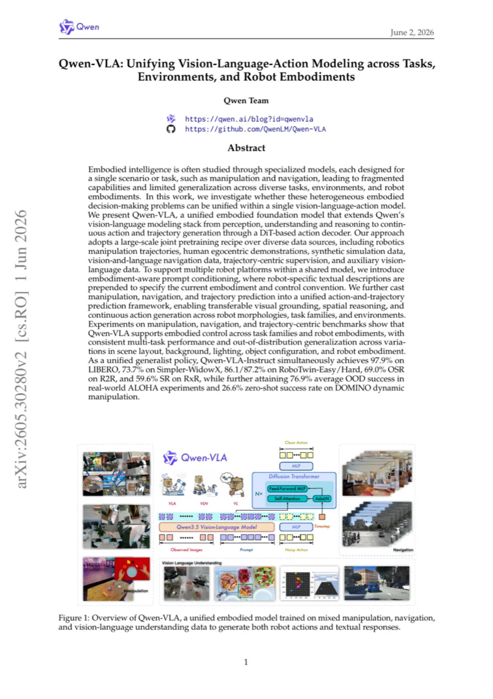
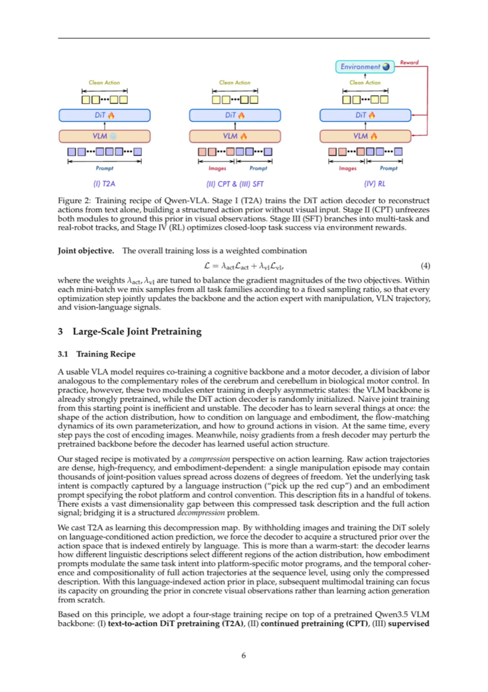
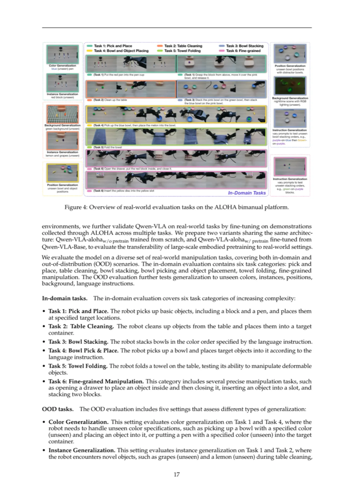
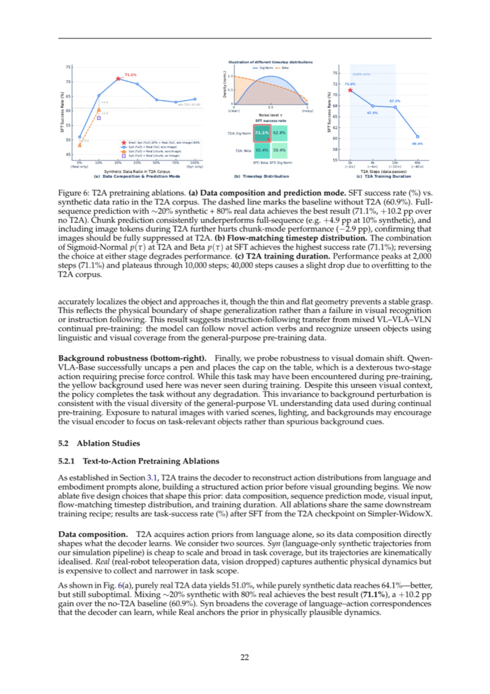

Qwen-VLA 是首个将机器人操作、室内导航与轨迹预测统一在单一 Vision-Language-Action（VLA）模型中的具身基础模型。它在 Qwen3.5-4B 多模态骨干之上附加一个 DiT 流匹配（flow matching）动作解码器，通过形态感知提示条件（embodiment-aware prompt conditioning）和大规模联合预训练，实现单模型跨多平台部署——作为通才策略，同时在操作、导航、零样本泛化等多个基准上超越专家模型。
具身智能的研究长期依赖专用模型：操作模型、导航模型各自独立，导致能力碎片化、跨场景泛化能力受限。这些模型表面上异构——动作空间、控制频率、预测视野均不相同——却共享同一底层计算结构：从视觉观测和语言指令出发，预测物理上合理的未来动作或轨迹。Qwen-VLA 正是基于这一观察，探索能否将操作、导航、轨迹预测等异构具身决策问题统一到单一 VLA 模型中。
"We investigate whether these heterogeneous embodied decision-making problems can be unified within a single vision-language-action model."

上述数字均来自论文表格，Qwen-VLA-Instruct 作为通才策略（generalist policy）一次性训练，无需针对各基准单独微调，在 LIBERO、RoboTwin-Easy/Hard（86.1%/87.2%）、RxR 导航（59.6% SR）等多个基准上与甚至超越专用专家模型。
Qwen-VLA 的核心由三部分构成：(1) Qwen3.5-4B 多模态视觉-语言骨干；(2) 单流 DiT 流匹配动作解码器；(3) 统一动作与轨迹表示。通过形态感知提示条件（embodiment-aware prompt conditioning）在无需改变模型架构的前提下支持多机器人平台，并采用四阶段渐进训练流程（T2A → CPT → SFT → RL）将动作先验学习、视觉对齐、任务特化和成功率优化分离成独立阶段。

骨干采用 Qwen3.5（Team, 2026），原生多模态模型，通过 ViT + 空间合并将视觉 token 直接插入文本 token 流，采用混合注意力设计（门控线性注意力 + 分组查询 softmax 注意力），在保留全精度全局推理的同时高效编码长多模态序列。
动作专家（action expert）采用单流 DiT 风格的流匹配策略。它将 VLM 隐状态与带噪动作块拼接成一个序列，经过带 AdaLN 时间步条件的联合 self-attention 处理，参数约 1.15B（16 个 DiT 块，每块 70.8M）。训练时采用流匹配目标（flow-matching objective），推理时通过少量 Euler 积分步从 τ=1 到 τ=0 生成动作块，实现低延迟实时控制。
每个训练样本前置一个描述当前平台、手臂配置、控制约定的文本提示：
"The robot is {robot_tag} with {single arm / dual arms}[, waist][, and mobile base]. The control frequency is {FPS} Hz. Please predict the next {chunk_size} control actions to execute the following task: {ori_instruction}."
该提示是模型了解平台专属控制语义的唯一接口，无需额外的形态专用输出头。预训练语料覆盖 WidowX、Google Robot、Franka Panda、Fourier GR-1、Mobile ALOHA、AgiBot A2-D 等 11 种代表性机器人平台。
所有任务输出均表示为 Y ∈ RH×K（H 为预测视野，K 为共享通道维度）。操作任务（∆EEF、关节角度、夹手状态）和导航任务（∆x, ∆y, ∆θ 航点）均占据 Y 的前 c ≤ K 个通道，其余通道零填充，由二值掩码 M ∈ {0,1}H×K 屏蔽填充项对梯度的影响。这使单一 DiT 参数集可处理所有控制模式。
机器人操作轨迹（含 10,000+ 小时公开数据集 + 1,000+ 小时自有数据）、8M+ 合成仿真轨迹（IsaacLab + cuRobo）、EgoDex（829 小时）、EgoVerse（1,300+ 小时）、多种室内导航数据集，以及约 48,000 个细粒度具身动作标注 video-caption 对。
实验覆盖机器人操作（仿真+真机）、室内视觉-语言导航、静态与动态操作 OOD 泛化共四大场景，比较两个模型变体：Qwen-VLA-Base（大规模预训练后）和 Qwen-VLA-Instruct（SFT+RL 后）。
| 方法 | 类型 | LIBERO | Simpler-WidowX | RoboTwin-Easy | RoboTwin-Hard |
|---|---|---|---|---|---|
| π0 | Specialist | 94.4 | 65.9 | 64.3 | 58.4 |
| StarVLA-OFT | Specialist | 96.6 | 64.6 | 50.4 | — |
| GR00T N1.6 | Specialist | 97.2 | 63.2 | 47.6 | — |
| π0.5 | Specialist | 97.6 | 46.9 | 82.7 | 76.8 |
| ABot-M0 | Specialist | 98.6 | — | 86.0 | 85.0 |
| Being-H0.5 | Specialist | 97.6 | 53.3 | — | — |
| Qwen-VLA-Base | Generalist | 90.8 | 64.3 | 64.3 | 66.4 |
| Qwen-VLA-Instruct | Generalist | 97.9 | 73.7 | 86.1 | 87.2 |
Qwen-VLA-Instruct 作为通才模型，在 LIBERO 达到 97.9%，与最优专家模型持平；在 Simpler-WidowX（73.7%）、RoboTwin-Easy（86.1%）、RoboTwin-Hard（87.2%）上超越所有专家模型。RoboCasa-GR1 达到 56.7%，超越 π0.5（37.0%）、GR00T N1.6（49.9%）和 Being-H0.5（53.3%）。

| 模型 | 域内平均（%） | OOD 平均（%） |
|---|---|---|
| GR00T N1.6 | 28.6 | 25.4 |
| π0.5 | 71.6 | 41.5 |
| Qwen-VLA-alohaw/o pretrain | 48.5 | 36.2 |
| Qwen-VLA-alohaw/ pretrain | 83.6 | 76.9 |
从 Qwen-VLA-Base 微调的版本（有预训练）将域内平均成功率从 48.5% 提升至 83.6%，OOD 平均达 76.9%，较 π0.5 高 35.4 个百分点，较无预训练版本高 40.7 个百分点。
在 R2R Val-Unseen，Qwen-VLA-Instruct 达到 OSR 69.0、SR 57.5、SPL 51.2，超越 StreamVLN（OSR 64.2）；在 RxR Val-Unseen，SR 59.6、SPL 47.8，超越所有开源基线。
Qwen-VLA-Instruct 以 26.6% SR、39.5 MS 成为 DOMINO 动态操作基准最优，超越专门在动态操作数据上微调的 PUMA（SR 17.2%，MS 35.0）9.4 pp，且完全未使用动态操作训练数据。

视觉-语言联合训练在需要细粒度识别和组合指令解析的基准上带来显著提升：RoboCasa-GR1 +4.9 pp（51.1% → 56.0%），RoboTwin-2.0 +4.6 pp（81.8% → 86.4%）。零填充（Zero-Padding）投影设计与 Multi-MLP、Concatenation 性能相当（差距 <1.2 pp），但参数量最少，成为默认选择。RL 后训练在 SimplerEnv 目标环境提升 +2.9 pp，且在未参与 RL 训练的基准上性能保持或温和提升，无灾难性遗忘。
"Embodied action data remains far smaller and less diverse than vision-language pretraining data, limiting robustness to long-tail objects, environments, embodiments, and contact-rich interactions."——长尾物体、接触丰富的交互（如布料折叠、精细插接）仍是薄弱环节。
"Joint training across vision-language understanding, navigation, and action generation introduces optimization trade-offs. While action-oriented training improves policy learning, it can modestly regress some pure vision-language and navigation evaluations, suggesting the need for better objective balancing, data curricula, and modular specialization."——动作学习与语言理解之间存在梯度竞争，需要更好的目标平衡和数据课程。
"Current evaluations are still largely short-horizon and benchmark-driven, leaving long-duration, failure-prone real-world deployment as an open challenge."——长时程规划、失败恢复、开放世界真机部署仍是未解决的挑战。未来方向包括情节记忆、世界模型预测、力觉/触觉等更丰富的物理反馈。